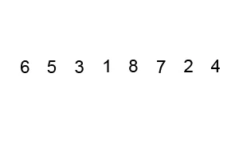
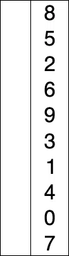
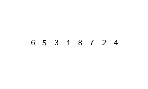
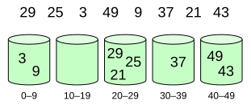
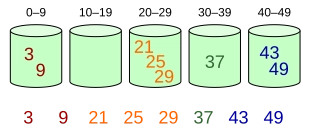
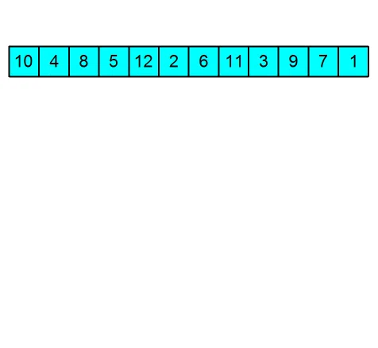

| Bubble Sort |
- simpler Code wird benötigt
- Komplexität ist egal
|
 |
| Selection Sort |
- kleine Arrays / Datensätze sortieren
- Abhaken aller Elemente ist obligatorisch
- Einfachheit ist wichtiger als Leistung
|
 |
| Insertion Sort |
- verknüpfte Listen (linked listes)
- das Array ist klein
|
 |
| QuickSort |
- Rekursion wird benötigt und unterstützt
- Das Array ist klein
- Es sind noch einige Elemente übrig, die sortiert werden müssen
|
 |
| MergeSort |
- große Datensätze / Datenbanken
- verknüpfte Listen (linked lists)
- wenn Datenstabilität im Vordergrund steht
|
 |
| Bucket Sort |
- Kommazahlen (float)
- Die Eingabe wird gleichmäßig über einen Bereich verteilt.
|


|
| Shell Sort |
- Optimierung des Insertion Sort / bessere Laufzeit
- kurze Subarrays
- Die Rekursion überschreitet eine Grenze.
- Die Einfügung funktioniert nicht gut, wenn nahe Elemente weit entfernt sind.
|
 |
| Heap Sort |
- große Datensätze
- Ermittlung von Extremwerten
- Datenkomprimierung
- Dijkstra-Algorithmus zur Ermittlung des kürzesten Pfades in einem Graphen
- Grundlage für Prioritätswarteschlangen, die in Betriebssystemen und der Netzwerkplanung verwendet werden
|
 |
{kind=link}
{kind=link}
{kind=link}
{kind=link}
{kind=link}
{kind=link}